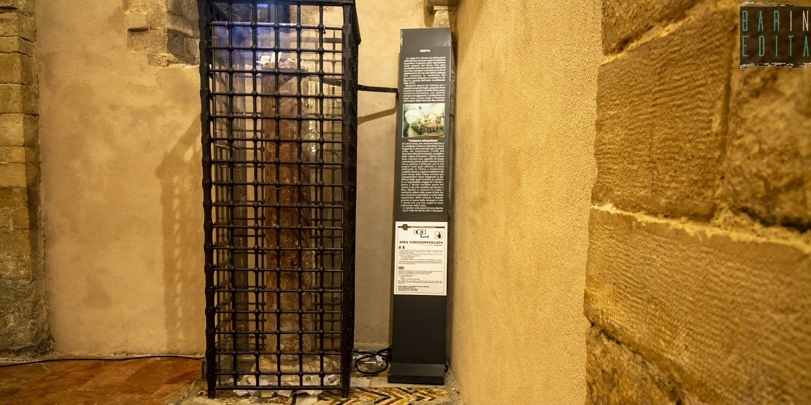

Descrizione
La Basilica di San Nicola è uno dei principali esempi di architettura romanica in Puglia.Costruita per custodire le reliquie del santo patrono di Bari, è un luogo di pellegrinaggio e simbolo di incontro tra culture.
Altre curiosità sulla Basilica
Video documentario: tra storia e architettura
Una lettera di Papa Francesco[VIAF]
Lettera del Santo Padre Francesco a Mons.Francesco Cacucci, Arcivescovo di Bari-Bitonto,per il cinquantesimo anniversario dell'elevazione della Basilica di San Nicola di Bari a Basilica Pontificia
Sono trascorsi cinquant’anni da quando il mio Predecessore San Paolo VI, elevò la Basilica di San Nicola di Bari a Basilica Pontificia, attribuendo l’ufficio di Delegato Pontificio all’Arcivescovo pro tempore di Bari. Questa importante ricorrenza è motivo di gioia per l’Arcidiocesi, per la città e la Regione Puglia, per l’Ordine dei Predicatori che custodisce il sacro tempio, come pure per l’intera cattolicità poiché questo luogo di fede, di preghiera, di incontro e di dialogo ha favorito il movimento ecumenico. In questi anni, la Basilica nicolaiana, così singolarmente legata alla Santa Sede, ha saputo bene manifestare la sua specifica vocazione finalizzata a dare impulso al cammino di unità dei cristiani. Ciò è stato facilitato dalla sincera devozione al Santo Vescovo di Myra dei fedeli d’Oriente e d’Occidente. Il mio pensiero va a tutti coloro che in qualsiasi modo hanno cooperato all’attività liturgica, pastorale, culturale e soprattutto ecumenica, i cui frutti ho potuto constatare personalmente nella mia recente visita in occasione dell’incontro di preghiera e di riflessione con i Capi delle Chiese presenti in Medio Oriente. Incoraggio quanti si adoperano, con diverse responsabilità, nella conduzione pastorale di questa storica e insigne Basilica a proseguire il loro servizio con spirito di collaborazione e con rinnovato ardore apostolico, aiutando i pellegrini e la gente che la frequenta e guarda ad essa con fiducia a riscoprirne l’importanza spirituale. Si tratta di favorire nei fedeli il percorso di una assidua ricerca di Dio, alimentata da intensa pietà e da insaziata nostalgia della contemplazione. La preghiera ha una straordinaria forza evangelizzante ed è necessaria per il raggiungimento della piena comunione tra i cristiani. Auspico che la significativa ricorrenza cinquantenaria sia, altresì, motivo di un rinnovato interesse per lo studio delle vicende storiche della Basilica Pontificia, della figura di San Nicola, come anche della teologia ecumenica. La riflessione scientifica, accompagnata dalle programmate manifestazioni culturali, possa affiancarsi alla pietà, alla liturgia e al culto verso il Santo apportando un valido contributo alle relazioni ecumeniche tra comunità cattoliche e ortodosse. Con tali sentimenti, invocando l’intercessione della Vergine Maria e di San Nicola, di cuore imparto la Benedizione Apostolica a Lei ed all’intera comunità diocesana, al Cardinale Angelo Becciu che presiede l’evento commemorativo, ai Padri Domenicani, ai promotori e relatori del convegno e a quanti prendono parte alle cerimonie evocative.
Francesco
La colonna miracolosa della cripta
Secondo una leggenda, una delle colonne che si trovano all'interno della cripta, sembra avere il potere di riuscire a far trovare marito a chi compie tre giri intorno ad essa nel giorno dedicato al santo, il 6 dicembre.La colonna è considerata un punto di contatto diretto con il santo. In passato, era possibile toccarla direttamente, ma oggi, per preservarne la conservazione, è stata racchiusa in una struttura di ferro. Una precauzione, questa, che non ha fermato le fedeli alla ricerca di marito, che hanno trovato una soluzione ingegnosa: scrivere bigliettini con le proprie richieste e farli scivolare all’interno della gabbia, nella speranza che San Nicola legga e interceda per loro.